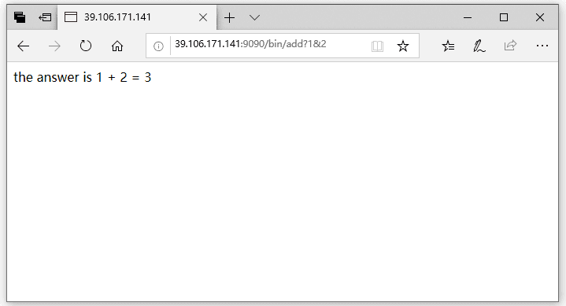

Web服务器
Web客户端和服务器之间的交互用的是一个基于文本的应用级协议，叫做HTTP（Hypertext Transfer Protocol，超文本传输协议）。HTTP是一个简单的协议。一个Web客户端（即浏览器）打开一个到服务器的因特网连接，并且请求某些内容。服务器响应所请求的内容，然后关闭连接。浏览器读取这些内容，并把它显示在屏幕上。
Web服务器以两种不同的方式向客户端提供内容：
- 取一个磁盘文件，并将它的内容返回给客户端。磁盘文件称为静态内容，而返回文件给客户端的过程称为静态服务内容。
- 运行一个可执行文件，并将它的输出返回给客户端。运行时可执行文件产生的输出称为动态内容，而运行程序并返回它的输出到客户端的过程称为服务动态内容。
每条由Web服务器返回的内容都是和它管理的某个文件相关联的。这些文件中的每一个都有一个唯一的名字，叫做URL。
对于动态内容来说，还有一个问题，就是如何传递参数，这里仅仅介绍GET请求的解决方法。GET请求中使用 "?" 字符分隔文件名和参数，而每一个参数都用一个 "&" 字符分隔开。参数中不允许出现空格，若必须用，使用字符串“%20”来表示。
使用Telnet发起GET请求
因为HTTP是基于在因特网连接上传送文本行的，我们可以使用Linux的Telnet程序来和因特网上的任何Web服务器执行事物。下面是一个例子。
root# telnet www.baidu.com 80 //connect
Trying 220.181.112.244...
Connected to www.a.shifen.com.
Escape character is '^]'.
GET / HTTP/1.1 //get request
Host:www.baidu.com
HTTP/1.1 200 OK //response header
Accept-Ranges: bytes
Cache-Control: no-cache
Connection: Keep-Alive
Content-Length: 14615
Content-Type: text/html
Date: Thu, 14 Feb 2019 12:13:13 GMT
Etag: "5c36c624-3917"
Last-Modified: Thu, 10 Jan 2019 04:12:20 GMT
P3p: CP=" OTI DSP COR IVA OUR IND COM "
Pragma: no-cache
Server: BWS/1.1
Set-Cookie: BAIDUID=972C37C9F406DB232AB3FD6C5D864364:FG=1;
expires=Thu, 31-Dec-37 23:55:55 GMT; max-age=2147483647; path=/; domain=.baidu.com
Set-Cookie: BIDUPSID=972C37C9F406DB232AB3FD6C5D864364; expires=Thu,
31-Dec-37 23:55:55 GMT; max-age=2147483647; path=/;
domain=.baidu.com
Set-Cookie: PSTM=1550146393; expires=Thu, 31-Dec-37 23:55:55 GMT;
max-age=2147483647; path=/; domain=.baidu.com
Vary: Accept-Encoding
X-Ua-Compatible: IE=Edge,chrome=1
<html> //content
...
</html>
Connection closed by foreign host. //close
root#
Tiny Web服务器
我实现的Tiny Web服务器是在书中的版本上再次简化的，第一是去掉封装，没有使用书中使用的封装函数。第二个是简化了返回信息。这里的Tiny Web服务器可以返回静态和动态的内容，动态内容都是在一个特殊目录下的。要实现这样一个服务器，大致的流程为：
- 在一个端口上监听连接。简单起见，这里不使用并发。
- 解析Get请求，其实主要是解析url，得到请求的文件路径。
- 如果是静态内容，先得到文件格式，然后把文件复制到客户端，然后返回。如果是动态内容，解析参数，然后使用fork执行程序，传递参数，等待子进程执行完毕，然后返回。
下面是具体的实现：
#include<stdio.h>
#include<string.h>
#include<sys/socket.h>
#include<arpa/inet.h>
#include<sys/stat.h>
#include<sys/mman.h>
#include<sys/types.h>
#include<fcntl.h>
#include<unistd.h>
#include<sys/wait.h>
#include<stdlib.h>
#define SERVER_PORT 9090
#define BUFFER_SIZE 1024
extern char **environ;
void doit(int fd);
int main(int argc, char const *argv[])
{
struct sockaddr_in server,client;
socklen_t clen;
int sfd,cfd;
char buf[BUFFER_SIZE];
int n;/* the number read from client */
/* initial socket */
sfd = socket(AF_INET,SOCK_STREAM,0);
memset(&server,0,sizeof(server));
server.sin_family = AF_INET;
/* always remember transfer to internet format */
server.sin_addr.s_addr = htonl(INADDR_ANY);
server.sin_port = htons(SERVER_PORT);
bind(sfd,(struct sockaddr *)&server,sizeof(server));
/* transfer to active socket */
listen(sfd,20);
while(1){
cfd = accept(sfd,(struct sockaddr *)&client,&clen);
doit(cfd);
close(cfd);
printf("finish a request\r\n");
}
close(sfd);
return 0;
}
void clientError(int fd, char *cause, char *errnum,char *shortmsg, char *longmsg){
char buf[BUFFER_SIZE],body[BUFFER_SIZE];
/* Build the HTTP response body */
sprintf(body,"<html><title>Tiny Error</title>");
sprintf(body,"%s<body bgcolor=""ffffff"">\r\n",body);
sprintf(body,"%s%s:%s\r\n",body,errnum,shortmsg);
sprintf(body,"%s<p>%s:%s\r\n",body,longmsg,cause);
sprintf(body,"%s<hr><em>The Tiny Web server</em>\r\n",body);
sprintf(buf,"HTTP/1.0 %s %s\r\n",errnum,shortmsg);
write(fd,buf,strlen(buf));
sprintf(buf,"Content-type:text/html\r\n");
write(fd,buf,strlen(buf));
sprintf(buf,"Content-length:%d\r\n\r\n",(int)strlen(body));
write(fd,buf,strlen(buf));
write(fd,body,strlen(body));
}
void readLine(int fd,char *buf,int max){
int ret = 0;
int i=0;
char c;
for(i=0;i<max-1;i++){
if( (ret = read(fd,&c,1)) > 0){
buf[i] = c;
if(c == '\n'){
i++;
break;
}
}else{
break;
}
}
buf[i] = '\0';
}
int ParseUrl(const char *url,char *filename,char *cgiargs){
char *ptr;
if(strstr(url,"bin") == NULL){ /* static content */
strcpy(cgiargs,"");
strcpy(filename,"./content");
strcat(filename,url);
if(url[strlen(url)-1] == '/'){
strcat(filename,"index.html");
}
return 1;
}else{ /* dynamic content */
ptr = index(url,'?');
if(ptr != NULL){
strcpy(cgiargs,ptr+1);
*ptr = '\0';
}else{
strcpy(cgiargs,"");
}
strcpy(filename,"./content");
strcat(filename,url);
return 0;
}
}
void getFiletype(char *filename,char *filetype){
if(strstr(filename,".html")){
strcpy(filetype,"text/html");
}else if(strstr(filename,".jpg")){
strcpy(filetype,"image/jpeg");
}else{
strcpy(filetype,"text/plain");
}
printf("%s %s\n",filename,filetype);
}
void serveStatic(int fd,char *filename,int filesize){
int srcfd;
char *srcp;
char filetype[BUFFER_SIZE],buf[BUFFER_SIZE];
getFiletype(filename,filetype);
printf("%s\n",filetype);
sprintf(buf,"HTTP/1.0 200 OK\r\n");
sprintf(buf,"%sServer: Tiny Web Server\r\n",buf);
sprintf(buf,"%sConnection: close\r\n",buf);
sprintf(buf,"%sContent-length:%d\r\n",buf,filesize);
sprintf(buf,"%sContent-type:%s\r\n\r\n",buf,filetype);
write(fd,buf,strlen(buf));
printf("Response headers:\n%s",buf);
/* copy file to client */
srcfd = open(filename,O_RDONLY,0);
srcp = mmap(0,filesize,PROT_READ,MAP_PRIVATE,srcfd,0);
close(srcfd);
write(fd,srcp,filesize);
munmap(srcp,filesize);
}
void serveDynamic(int fd,char *filename,char *cgiargs){
char buf[BUFFER_SIZE];
char *emptylist[] = { NULL };
sprintf(buf,"HTTP/1.0 200 OK\r\n");
sprintf(buf,"%sServer: Tiny Web Server\r\n",buf);
write(fd,buf,strlen(buf));
if(fork() == 0){ /* child */
setenv("QUERY_STRING",cgiargs,1);
dup2(fd,STDOUT_FILENO);
execve(filename,emptylist,environ);
}
wait(NULL);
}
void doit(int fd){
int isStatic;
struct stat sbuf;
char buf[BUFFER_SIZE],method[BUFFER_SIZE],url[BUFFER_SIZE],version[BUFFER_SIZE];
char filename[BUFFER_SIZE],cgiargs[BUFFER_SIZE];
readLine(fd,buf,BUFFER_SIZE);
sscanf(buf,"%s %s %s",method,url,version);
printf("Request:\n%s %s %s\n",method,url,version);
if(strcasecmp(method,"GET") != 0){
clientError(fd,method,"501","Not implemented","Tiny does not implement this method");
return;
}
/* read remaining get request */
readLine(fd,buf,BUFFER_SIZE);
while(strcmp(buf,"\r\n")!=0){
printf("%s",buf);
readLine(fd,buf,BUFFER_SIZE);
}
isStatic = ParseUrl(url,filename,cgiargs);
printf("static = %d, filename = %s, cgiargs = %s\n",isStatic,filename,cgiargs);
/* check file in the disk */
if(stat(filename,&sbuf) < 0){
clientError(fd,filename,"404","Not found","Tiny couldn't find this file");
return;
}
if(isStatic == 1){
if(!(S_ISREG(sbuf.st_mode)) || !(S_IRUSR & sbuf.st_mode)){
/* normal file and the read permission */
clientError(fd,filename,"403","Forbidden","Tiny couldn't read the file");
return;
}
serveStatic(fd,filename,sbuf.st_size);
}else{
if(!(S_ISREG(sbuf.st_mode)) || !(S_IXUSR & sbuf.st_mode)){
/* normal file and the execute permission */
clientError(fd,filename,"403","Forbidden","Tiny couldn't run the CGI program");
return;
}
serveDynamic(fd,filename,cgiargs);
}
}
add.c的实现：
#include<stdio.h>
#include<stdlib.h>
#include<unistd.h>
#include<string.h>
#define MAX 1024
int main(int argc, char const *argv[]){
char *buf,*p;
char arg1[MAX],arg2[MAX],content[MAX];
int n1 = 0,n2 = 0;
/* get two arguments */
if( (buf = getenv("QUERY_STRING")) != NULL ){
p = strchr(buf,'&');
*p = '\0';
strcpy(arg1,buf);
strcpy(arg2,p+1);
n1 = atoi(arg1);
n2 = atoi(arg2);
}
sprintf(content,"the answer is %d + %d = %d\r\n",n1,n2,n1+n2);
printf("Connection: close\r\n");
printf("Content-length: %d\r\n",(int)strlen(content));
printf("Content-type: text/html\r\n\r\n");
printf("%s",content);
fflush(stdout);
return 0;
}
可以使用浏览器进行测试。如下图所示：

这个程序没有超时机制，可能会出现一直等待的情况，另外对于错误也没有做处理，不过作为一个例子，这个程序已经做得足够好了。这个程序使我对于Web服务器的工作原理有一个基本的认识，当程序真正工作的时候，还是感觉挺激动的。